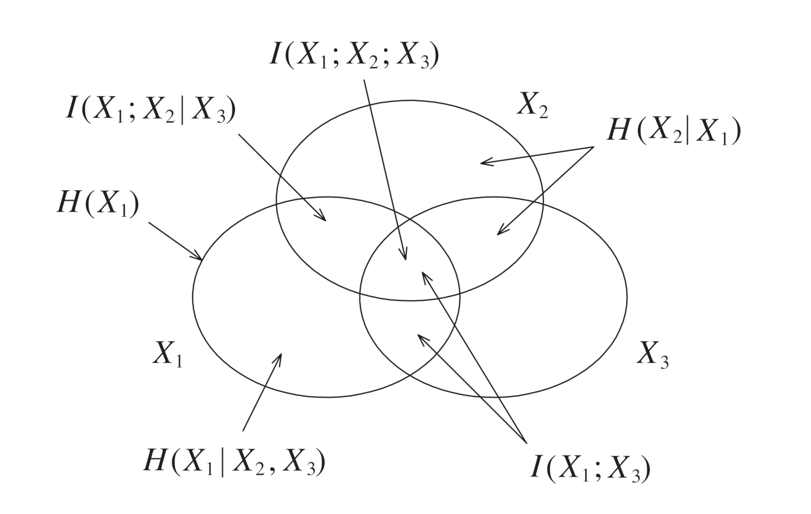
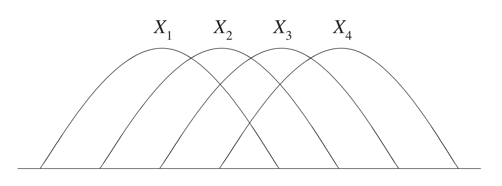
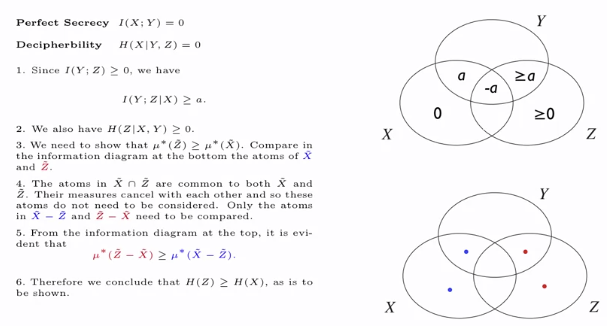
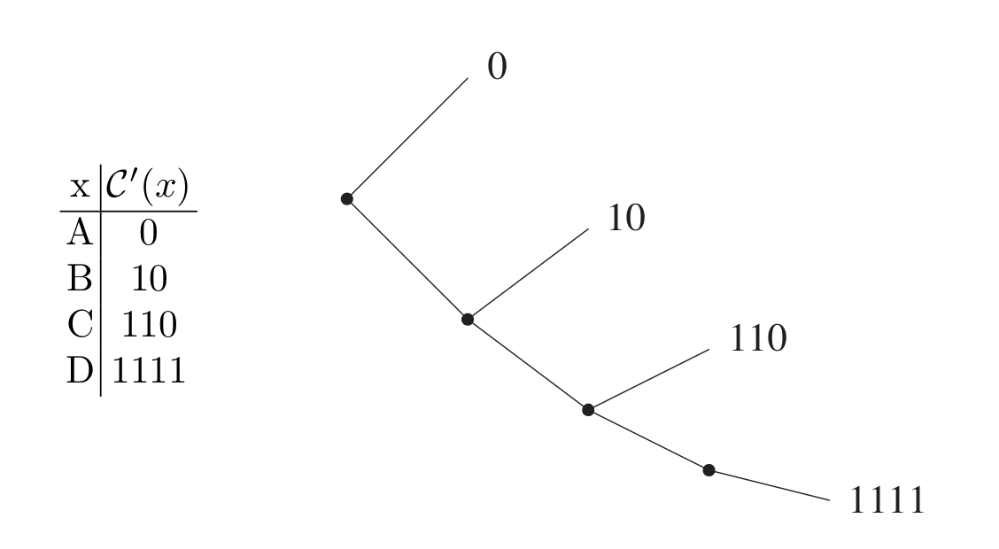

Information Theory
→ 1. The Science of Information
→ Shannon's Seminal Paper (1948)
→ 2. Information Measures
→ 2.1 Independence and Markov Chain
→ 2.2 Shannon's Information Measures
→ 2.3 Continuity of Shannon's Information Measures
→ 2.4 Chain Rules
→ 2.5 Informational Divergence
→ 2.6 The Basic Inequalities
→ 2.7 Some Useful Information Inequalities
→ 2.8 Fano's Inequality
→ 2.10 Entropy Rate of a Stationary Source
→ 3. The I-Measure
→ 3.1 Preliminaries
→ 3.3 Construction of the I-Measure \(\mu^\ast\)
→ 3.4 \(\mu^\ast\) can be Negative
→ 3.5 Information Diagrams
→ 4. Zero-Error Data Compression
→ 4.1 The Entropy Bound
→ 4.2 Prefix Codes
→ Shannon's Seminal Paper (1948)
→ 2. Information Measures
→ 2.1 Independence and Markov Chain
→ 2.2 Shannon's Information Measures
→ 2.3 Continuity of Shannon's Information Measures
→ 2.4 Chain Rules
→ 2.5 Informational Divergence
→ 2.6 The Basic Inequalities
→ 2.7 Some Useful Information Inequalities
→ 2.8 Fano's Inequality
→ 2.10 Entropy Rate of a Stationary Source
→ 3. The I-Measure
→ 3.1 Preliminaries
→ 3.3 Construction of the I-Measure \(\mu^\ast\)
→ 3.4 \(\mu^\ast\) can be Negative
→ 3.5 Information Diagrams
→ 4. Zero-Error Data Compression
→ 4.1 The Entropy Bound
→ 4.2 Prefix Codes
These are my lecture notes on Prof. Raymond W. Yeung's excellent course on information theory. The course is based on Prog. Yeung's book "Information Theory and Network Coding" and these notes are organized around that.
Information theory is a major research field in communication theory and applied probability. This is not meant as a comprehensive guide but rather a loose collection of definitions and short summaries.
1. The Science of Information

- Information is uncertainty: modeled as random variables
- information is transmitted digitally: transmission is based on ones and zeros with no reference to what they represent
Shannon's Seminal Paper (1948)
- The source coding theorem defines entropy as the fundamental measure of information and establishes a fundamental limit for data compression (there always exists a minimal compressed-file size, no matter how smart the compression). This is the theoretical basis for lossless data compression.
- The channel coding theorem establishes a fundamental rate limit for reliable communication through a noisy channel. There always exists a maximum rate, called the channel capacity (which is generally strictly positive), of how much data can be reliably transmitted through a a channel.
2. Information Measures
- \(X\) is a discrete random variable taking values in \(\mathcal{X}\)
- \({p_X(x)}\) is the probability distribution for \(X\)
- \(\mathcal{S}_X=\{x\in\mathcal{X}:{p_X(x)>0}\}\) is the support of X (set of all outcomes \(x\) such that the probability is non-zero)
- if \(\mathcal{S}_X=\mathcal{X}\), \(p\) is called strictly positive
2.1 Independence and Markov Chain
Random variables \(X\) and \(Y\) are called independent, denoted by \(X\perp Y\) if: $$ \forall (x,y) \in \mathcal{X\times Y}\colon\, p(x, y)=p(x)p(y) $$For \(n\ge3\), random variables \(X_1, X_2,...X_n\) are mutually independent if: $$ \forall (x_1, x_2,...,x_n)\colon\, p(x_1, x_2,...,x_n)=p(x_1)p(x_2)\cdots p(x_n) $$
For \(n\ge3\), random variables \(X_1, X_2,...X_n\) are pairwise independent if all \(X_i\) and \(X_j\) are independent.
Mutual independence \(\implies\) pairwise independence
For random variables \(X\), \(Y\) and \(Z\), \(X\) is independent of \(Z\) conditioning on \(Y\), denoted by \((X\perp Z)\mid Y\) (conditional independence) $$ p(x, y, z) = \Bigg\{ \begin{array}{lr} \frac{p(x,y)p(y,z)}{p(y)}\,(\ast), & \text{if } p(y)>0\\ 0, & \text{otherwise} \end{array} $$
if \(p(y)>0\) then $$ p(x,y,z)=(\ast)\,\frac{p(x,y)p(y,z)}{p(y)}=p(x,y)p(z|y) $$
 "In other words, \(A\) and \(B\) are conditionally independent given \(C\) if and only if, given knowledge that \(C\) occurs, knowledge of whether \(A\) occurs provides no information on the likelihood of \(B\) occurring, and knowledge of whether \(B\) occurs provides no information on the likelihood of \(A\) occurring." [1] In the picture on the right \(R\) and \(B\) are conditionally independent given \(Y\) but not given \(\overline Y\)
"In other words, \(A\) and \(B\) are conditionally independent given \(C\) if and only if, given knowledge that \(C\) occurs, knowledge of whether \(A\) occurs provides no information on the likelihood of \(B\) occurring, and knowledge of whether \(B\) occurs provides no information on the likelihood of \(A\) occurring." [1] In the picture on the right \(R\) and \(B\) are conditionally independent given \(Y\) but not given \(\overline Y\)For random variables \(X\), \(Y\) and \(Z\) $$ \forall (x, y, z),\, p(y)>0\colon\, [(X\perp Z)\mid Y \iff p(x,y,z) = a(x,y)b(y,z)] $$ Meaning \(p(x,y,z)\) can be factorized as the given term, where \(a\) is a function that depends only on \(x, y\) and \(b\) is a function that depends only on \(y, z\).
For random variables \(X_1, X_2,\ldots,X_n\) where \(n\ge 3\), \(X_1→X_2→\cdots→X_n\) forms a Markov chain if $$ p(x_1, x_2,\ldots,x_n) = \\\Bigg\{\begin{array}{lr} p(x_1, x_2)p(x_3|x_2)\cdots p(x_n|x_{n-1}) & \text{if } p(x_2), p(x_3),\ldots,p(x_{n-1})>0\\ 0, & \text{otherwise} \end{array} $$
or equivalently when \(p(x_1, \ldots, x_n)p(x_2)\cdots p(x_{n-1}) = p(x_1, x_2)p(x_2, x_3)\cdots p(x_{n-1}, x_n)\).
Note that this definition allows for non-stationary transition probabilities, i.e. the probability distribution can still change over time, see stationarity below.
- \(X_1→X_2→X_3 \iff (X_1\perp X_3)\mid X_2\)
- \(X_1→X_2→\cdots→X_n\) forms a Markov chain \(\iff X_n→X_{n-1}→\cdots X_1\) forms a Markov chain
- \(X_1→X_2→\cdots→X_n\) forms a Markov chain if and only if $$ X_1→X_2→X_3\\ (X_1,X_2)→X_3→X_4 \\\vdots\\ (X_1, X_2, \ldots, X_{n-2})→X_{n-1}→X_n $$ form Markov chains.
- \(X_1→X_2→\cdots→X_n\) forms a Markov chain if and only if $$ p(x_1, x_2,\ldots,x_n) =f_1(x_1, x_2)f_2(x_2,x_3)\cdots f_{n-1}(x_{n-1},x_2) $$ This is a generalization of Proposition 2.5
Markov subchains: Let \(\mathcal{N}_n=\{1,2,\ldots n\}\) and let \(X_1→X_2→\cdots→X_n\) form a Markov chain. For any subset \(\alpha\) of \(\mathcal{N}_n\) denote \((X_i, i \in \alpha)\) (a collection of random Variables) by \(X_\alpha\). Then for any disjoint subsets \(\alpha_1, \alpha_2, \ldots \alpha_m\) of \(\mathcal{N}_n\) such that $$ k_1 < k_2 < \cdots < k_m $$ for all \(k_j \in \alpha_j, \,j=1,2,\ldots, m\), $$ X_{\alpha_1}→X_{\alpha_2}→\cdots→X_{\alpha_n} $$ forms a Markov chain. Thats is, a subchain of \(X_1→X_2→\cdots→X_n\) is also a Markov chain.
2.2 Shannon's Information Measures
Shannon introduced these basic measures of information:- Entropy \(H(X) = -\sum_xp(x)\log_\alpha p(x) = -E[\log p(X)]\)
Measures the uncertainty of a discrete random variable. The unit for entropy is bit if \(\alpha=2\), nat if \(\alpha=e\) and D-it if \(\alpha = D\). (A bit in information theory is different from a bit in computer science) - Joint Entropy \(H(X, Y) = -\sum_{x, y} p(x, y) \log p(x,y) = -E[\log p(X,Y)]\)
Measures the uncertainty of two joint discrete random variables. - Conditional Entropy \(H(Y|X) = -\sum_{x, y} p(x, y) \log p(y|x) = -E[\log p(Y|X)]\)
Measures the uncertainty of a discrete random variable Y, given X. - Mutual Information \(I(X; Y) = \sum_{x, y} p(x, y)\log \frac{p(x,y)}{p(x)p(y)}=E[\log \frac{p(X,Y)}{p(X)p(Y)}]\)
"Quantifies the "amount of information" [..] obtained about one random variable through observing the other random variable."[2] - Conditional Mutual Information \(I(X; Y|Z) = \sum_{x,y,z} \log \frac{p(x, y|z)}{p(x|z)p(y|z)} = E[\log \frac{p(X, Y|Z)}{p(X|Z)p(Y|Z)}]\)
The mutual information of X and Y, given Z.
All of the above information measures can be expressed in terms of conditional mutual information.

- \(H(X, Y) = H(Y, X)\) and \(I(X; Y) = I(Y; X)\) and \(I(X; Y | Z) = I(Y; X | Z)\)(symmetry)
- \(H(X, Y) = H(X) + H(Y|X)\) (revealing X and Y at the same time or one after another yields the same amount of information)
- \(I(X; X) = H(X)\)
- \(I(X; Y) = H(X) - H(X|Y)\)
- \(I(X; Y) = H(X) + H(Y) - H(X, Y)\) (→ inclusion-exclusion)
- \(I(X; X|Z) = H(X|Z)\)
2.3 Continuity of Shannon's Information Measures
All of the information measures described above are continuous for fixed finite alphabets with respect to convergence in variational distance (\(\mathcal{L}_1\) distance): $$ V(p, q) = \sum_{x\in\mathcal{X}} |p(x) - q(x)| $$2.4 Chain Rules
- Chain Rule for Entropy \(H(X_1, X_2, \ldots, X_n) = \sum_{i=1}^n H(X_i|X_1, \ldots, X_{i-1})\)
- Chain Rule for Conditional Entropy
- Chain Rule for Mutual Information \(I(X_1, X_2, \ldots, X_n; Y) = \sum_{i=1}^n I(X_i;Y|X_1, \ldots, X_{i-1})\)
- Chain Rule for Conditional Mutual Information
2.5 Informational Divergence
The informational divergence (Kullback-Leibler distance/relative entropy) between two probability distributions \(p\) and \(q\) on a common alphabet \(\mathcal{X}\) is defined as: $$ D(p\|q)=\sum_xp(x)\log\frac{p(x)}{q(x)} = E_p\log\frac{p(X)}{q(X)} \underset{\text{"Div. Ineq."}}{\ge} 0 $$ (where \(E_p\) denotes expectation with respect to \(p\), note that \(D\) is not symmetrical)Fundamental Inequality: \(\ln a \le a-1\) for \(a > 0\)
Log-Sum Inequality: $$ \sum_i a_i \log \frac{a_i}{b_i} \ge \bigg(\sum_i a_i\bigg) \log \frac{\sum_i a_i}{\sum_i b_i} $$ Log-Sum Inequality \(\iff\) Divergence Inequality
Pinsker's Inequality: \(D(p\|q) \ge \frac{1}{2\ln 2} V^2(p, q)\)
In particular, convergence in informational divergence \(\implies\) convergence in variational distance
2.6 The Basic Inequalities
- \(I(X; Y|Z) \ge 0\) (follows from the divergence inequality)
- \(H(X)=0 \iff X\) is deterministic
- \(H(Y|X) = 0 \iff Y\) is a function of \(X\)
- \(H(Y) \le H(X) \iff Y\) is a function of \(X\) (deterministically processing a random variable cannot increase entropy)s
- \(I(X; Y) = 0 \iff X\) and \(Y\) are independent
2.7 Some Useful Information Inequalities
- Conditioning does not increase entropy: \(H(Y|X) \le H(Y)\) and \(H(Y|X, Z) \le H(Y|Z)\) (equality iff \(X\) and \(Y\) are independent) Note however that conditioning can increase mutual information (page 60).
- Independence bound for entropy: \(H(X_1, X_2, \ldots, X_n) \le \sum_{i=1}^n H(X_i)\) (equality iff all \(X_i\) are mutually independent)
- \(I(X; Y, Z) \le I(X; Y)\) (equality iff \(X → Y → Z\) forms a MC)
- Closer variables on the MC have higher mutual information: If \(X→Y→Z\) then \(I(X;Z) \le I(X;Y)\) and \(I(X;Z) \le I(Y;Z)\)
- Closer pairs of variables on a MC have lower conditional entropy: \(X→Y→Z \implies H(X|Z) \ge H(X|Y)\)
- Data processing inequality If \(U→X→Y→V\) forms a MC then \(I(U; V) \le I(X; Y)\) ("post-processing cannot increase information"[3])
2.8 Fano's Inequality
Theorem: \(H(X) \le \log |\mathcal{X}|\). Therefore if \(\mathcal{X}\) is finite then \(H(X)\) is finite.A random variable with an infinite alphabet can have finite or infinite entropy, see \(X\) with \(\Pr\{X=i\}=2^{-i}\) (example 2.45) or example 2.46 in the textbook.
Fano's Inequality
Let \(X\) and \(\hat X\) be random variables on the alphabet \(\mathcal{X}\). Then $$ H(X|\hat X) \le h_b(P_e)+P_e \log (|\mathcal{X}|-1) $$ where \(P_e = \Pr\{X\neq\hat X\}\) and \(h_b\) is the binary entropy function.
Suppose \(\hat X\) is an estimate on \(X\). If the error probability \(P_e\) is small, then \(H(X|\hat X)\) should be small as well.
For a finite alphabet \(P_e → 0 \implies H(X|\hat X) → 0\)
Corollary: \(H(X|\hat X) \le 1+P_e \log (|\mathcal{X}|)\)
2.10 Entropy Rate of a Stationary Source
A discrete-time information source can be modeled as a discrete-time random process \(P=\{X_k, k \ge 1\}\). \(P\) is an infinite collection of random variables indexed by the set of positive integers. The index \(k\) is referred to as the "time" index. Random variables \(X_k\) are called letters. We assume that all \(H(X_k)\) are finite.The total entropy of a finite subset of \(\{X_k\}\) (\(H(X_k, k\in A)\) where \(A \subset P\)) is finite because of the independence bound for entropy and our assumption that all \(H(X_k)\) are finite. Apart from special cases the joint entropy of an infinite collection of letters is usually infinite, therefore it is generally not meaningful to discuss the entropy of \(P\).
- The entropy rate \(H_X\) is defined as \(\lim_{n→\infty} \frac{1}{n}H(X_1, \ldots, X_n)\).
If the limit does not exist, \(H_X\) is not defined. - Define \(H_X^\prime\) as \(\lim_{n→\infty} H(X_n | X_1, X_2, \ldots, X_{n-1})\)
This is the limit of the conditional entropy of the next letter given the past history of the source.
An information source \(\{X_k\}\) is called stationary if \(X_1, X_2, \ldots, X_m\) and \(X_{1+l}, X_{2+l}, \ldots, X_{m+l}\) have the same joint distribution for any \(m, l \ge 1\).
For a sequence \((a_n)\), the Cesáro mean is defined as the sequence \((b_n)\), where \(b_n = \frac{1}{n}\sum_{i=1}^n a_i\). If \(a_n → a\) then \(b_n → a\).
Source stationary \(\implies\) the limit \(H_X^\prime\) exists \(\implies\) the entropy rate \(H_X\) exists and is equal to \(H_X^\prime\). (proof using stationarity and Cesáro mean) Therefore for stationary sources, \(H_X^\prime\) is simply an alternative definition/interpretation of the entropy rate.
3. The I-Measure
Shannon's information measures for \(n \ge 2\) random variables have a set-theoretic structure.- The random variable \(X\) corresponds to the set \(\tilde X\)
- \(H/I\) corresponds to \(\mu^\ast\), where \(\mu^\ast\) is some signed measure (set-additive function)
- \(,\) corresponds to \(\cup\)
- \(;\) corresponds to \(\cap\)
- \(|\) corresponds to \(-\) where \((A-B = A \cap B^C)\)
Notation
- \(X_G = (X_i, i \in G)\)
- \(\tilde X_G = \cup_{i\in G} \tilde X_i\)
3.1 Preliminaries
The field \(\mathcal{F}_n\) generated by sets \(\tilde X_1, \tilde X_2, \ldots, \tilde X_n\) is the collection of sets which can be obtained by any sequence of usual set operations on \(\tilde X_1, \tilde X_2, \ldots, \tilde X_n\).The atoms of \(\mathcal{F}_n\) are sets of the form \(\bigcap_{i=1}^n Y_i\) where \(Y_i\) is either \(\tilde X_i\) or \(\tilde X_1^C\).
A real function \(\mu\) defined on \(\mathcal{F}_n\) is called a signed measure if it is set-additive: for disjoint \(A, B\) in \(\mathcal{F}_n\): \(\mu(A \cup B) = \mu(A) + \mu(B)\).
A signed measure on \(\mathcal{F}_n\) is completely specified by its values on the atoms of \(\mathcal{F}_n\) , \(\{\mu(A), A \in \mathcal{A} \}\), since the values on other sets in \(\mathcal{F}_n\) can be obtained via set-additivity.
(\(\ast\)) A signed measure is furthermore completely specified by it's values on all unions \(\{\mu(B), B \in \mathcal{B} \}\) where \(\mathcal{B} = \{\tilde X_G : G \subset \mathcal{N_n}\}\).
3.3 Construction of the I-Measure \(\mu^\ast\)
- Let \(\tilde X_i\) be the set corresponding to the random variable \(X_i\)
- For a fix \(n\) let \(\mathcal{N_n} = \{1, 2, \ldots, n\}\)
- Let the universal set be \(\Omega = \bigcup_{i\in\mathcal{N_n}} \tilde X_i\)
- The atom $$ A_0 = \bigcap_{i\in \mathcal{N_n}} \tilde X_i^C = {\Bigg(\bigcup_{i \in \mathcal{N_n}} \tilde X_i \Bigg)}^C = \Omega^C = \emptyset $$ is called the empty atom of \(\mathcal{F_n}\).
- \(\mathcal{A}\) is the set of all other atoms of \(\mathcal{F_n}\), called the non-empty atoms and \(|A| = 2^n-1\).
Definition I-measure: Define \(\mu^\ast\) by setting $$\mu^\ast(\tilde X_G) = H(X_G)$$ for all non-empty \(G\subset \mathcal{N_n}\). This completely defines the measure as by (\(\ast\)). \(\mu^\ast\) is the unique signed measure on \(\mathcal{F_n}\) which is consistent with all information measures.
To show that \(\mu^\ast\) is consistent with all information measures we only have to show that it is consistent with conditional mutual information, i.e. that \(\mu^\ast(\tilde X_G \cap \tilde X_{G'}-\tilde X_{G''}) = H(X_G; X_{G'}|X_{G''})\). This can be proved using Lemmas 3.7 and 3.8 in the textbook.
Using the I-measure we can employ set-theoretic tools to manipulate expressions of Shannon's information measures.
3.4 \(\mu^\ast\) can be Negative
\(\mu^\ast\) is positive for all non-empty atoms that correspond to Shannon's information measures. It can however be negative in other cases such as \(\mu^\ast(\tilde X_1 \cap \tilde X_2 \cap \tilde X_3) = I(X_1;X_2;X_3)\), which is not a Shannon's information measure.For two or fewer random variables all three non-empty atoms correspond to Shannon's information measures so here \(\mu^\ast\) is always positive.
3.5 Information Diagrams
Due to the correspondence between information and set theory we can use Venn diagrams to visualize information measures. In \(n\) dimensions, any information diagram for \(n+1\) dimensions can be displayed perfectly.
We can always omit atoms from an information diagram on which \(\mu^\ast\) takes the value \(0\). In particular, this occurs when certain Markov conditions are imposed on the random variables, see the following information diagram for a Markov chain:
- If there is no constraint on \(X_1, X_2, \ldots, X_n\), then \(\mu^\ast\) can take any set of nonnegative values on the nonempty atoms of \(\mathcal{F_n}\).
- \(\mu^\ast\) is nonnegative on all atoms of a Markov chain.
- If \(\mu^\ast\) is nonnegative, then \(A\subset B \implies \mu^\ast(A) \le \mu^\ast(B)\)
Shannon's Perfect Secrecy Theorem
Given plaintext \(X\), ciphertext \(Y\) and key \(Z\).
- Perfect secrecy: \(I(X; Y) = 0\)
- Decipherability: \(H(X|Y, Z) = 0\)
These requirements imply that \(H(Z) \ge H(X)\), i.e. the length of the key is \(\ge\) the length of the plaintext.

Imperfect Secrecy TheoremGiven plaintext \(X\), ciphertext \(Y\) and key \(Z\). Decipherability: \(H(X|Y, Z) = 0\)
Generalization of Shannon's perfect secrecy theorem above: \(I(X;Y) \ge H(X) - H(Z)\)
Interpretation: \(I(X; Y)\) measures the leakage of information into the ciphertext
4. Zero-Error Data Compression
4.1 The Entropy Bound
A D-ary source code \(\mathcal{C}\) for a source random variable \(X\) is a function \(\mathcal{C}\colon \mathcal{X}→\mathcal{D^\ast}\), where \(\mathcal{D}^\ast\) is the set of all finite strings from a D-ary alphabet.A code \(\mathcal{C}\) is uniquely decodable if for any string in \(\mathcal{D^\ast}\) the function can be inverted to get the unique source sequence that generated it.
Kraft Inequality Let \(\mathcal{C}\) be a D-ary source code and let \(l_1, l_2, \ldots, l_m\) be the lengths of the codewords. If \(\mathcal{C}\) is uniquely decodable then, $$ \sum_{k=1}^m D^{-l_k}\le 1 $$
Let \(X\) be a source random variable with \(X \sim \{p_1, p_2, \ldots, p_m\}\). Then the expected code length \(L\) of a source code \(\mathcal{C}\) is \(\sum_i p_il_i\).
For a D-ary uniquely decodable code \(\mathcal{C}\) for a source variable \(X\) we can furthermore establish the entropy bound \(H_D(X) \le L\), since each D-ary symbol can carry at most 1 D-it of information.
The redundancy \(R\) of a D-ary uniquely decodable code is \(L-H_D(X) \underset{H \text{-bound}}{\ge} 0\)
4.2 Prefix Codes
A code is prefix-free if no codeword is a prefix of another codeword. Such codes are called prefix codes. All prefix codes are uniquely decodable.A tree representation of a prefix code is called a code tree.

Instantaneous decoding can be done by tracing the code tree from the root, starting at the beginning of the stream of coded symbols. In this way, the boundaries of the codewords can be discovered. A prefix code is said to be self-punctuating.There exists a D-ary prefix code with codeword lengths \(l_1, l_2, \ldots, l_m \iff\) the Kraft inequality is satisfied
A probability distribution is called D-adic (or dyadic when D=2) when \(p_i = D^{-t_i}\) for all \(i\), where \(t_i\) is an integer.
There exists a D-ary prefix code which achieves the entropy bound for a distribution \(\{p_i\}\) if and only if \(\{p_i\}\) is D-adic.